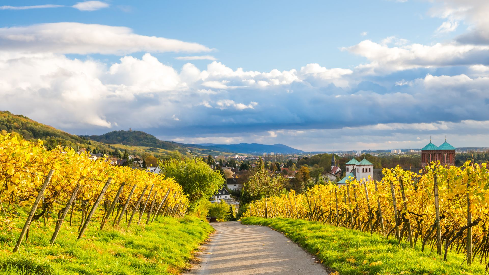
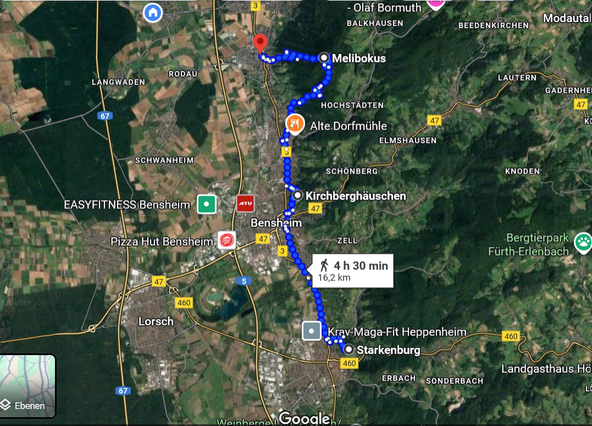

Tourbeschreibung
Start: Heppenheim | Ziel: Zwingenberg
Etappen: Starkenburg, Weinberge, Melibokus-Ausblick
Fotos
Route (Karte)
Termine
Jeden Samstag um 10:00 Uhr
Guide
Sabine Müller – erfahrene Naturführerin
Preis
25 € pro Person
Hinweise
Festes Schuhwerk erforderlich, ggf. Sonnen- oder Regenschutz.